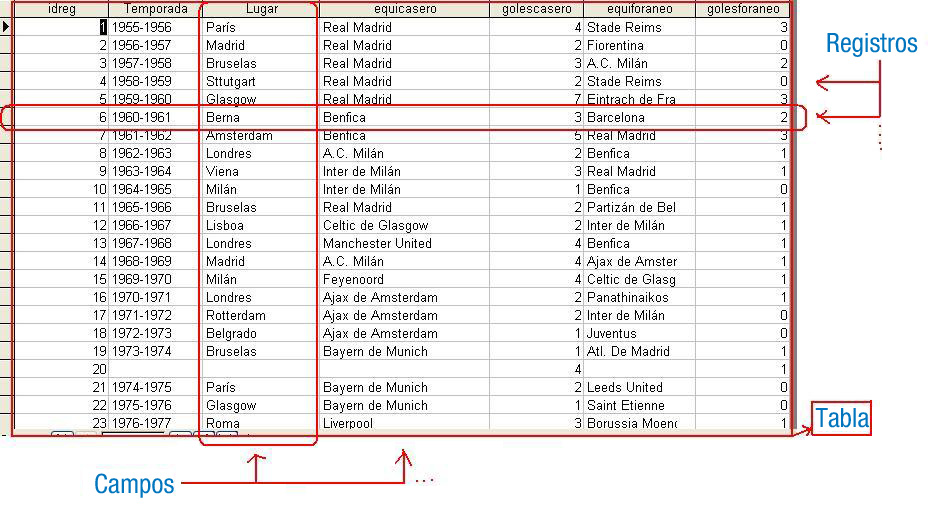

Actualmente, las bases de datos relacionales constituyen el sistema de almacenamiento probablemente más extendido, aunque otros sistemas de almacenamiento de la información se estén abriendo paso poco a poco.
{kind=link}
Una base de datos relacional se puede definir, de una manera simple, como aquella que presenta la información en tablas con filas y columnas.
Una tabla o relación es una colección de objetos del mismo tipo (filas o tuplas).
En cada tabla de una base de datos se elige una clave primaria para identificar de manera unívoca a cada fila de la misma.
El sistema gestor de bases de datos, en inglés conocido como: Database Management System (DBMS) gestiona el modo en que los datos se almacenan, mantienen y recuperan.
En el caso de una base de datos relacional, el sistema gestor de base de datos se denomina: Relational Database Management System (RDBMS).
Tradicionalmente, la programación de bases de datos ha sido como una torre de Babel: gran cantidad de productos de bases de datos en el mercado y cada uno "hablando" en su lenguaje privado con las aplicaciones.
Java, mediante JDBC (Java Database Connectivity), permite simplificar el acceso a bases de datos relacionales, proporcionando un lenguaje mediante el cual las aplicaciones pueden comunicarse con motores de bases de datos. Sun desarrolló este API para el acceso a bases de datos, con tres objetivos principales en mente:
- Ser un API con soporte de SQL: poder construir sentencias SQL e insertarlas dentro de llamadas al API de Java.
- Aprovechar la experiencia de los API's de bases de datos existentes.
- Ser lo más sencillo posible.